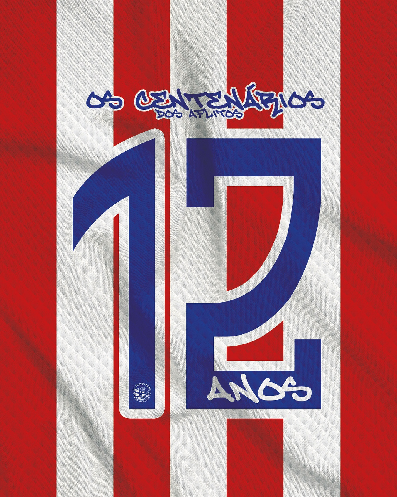

A Barra Brava do Clube Náutico Capibaribe.
Ver Produtos Conheça Nossa HistóriaCarregando destaques...

Os Centenários dos Aflitos é uma torcida apaixonada do Clube Náutico Capibaribe, fundada por torcedores que compartilham o amor incondicional pelo time. Nossa missão é apoiar o Náutico em todos os momentos, seja nas vitórias ou nas derrotas.
Nosso nome homenageia o centenário do clube e o histórico Estádio dos Aflitos, palco de tantas glórias do Timbu. Vestimos com orgulho as cores vermelho e branco e levamos nossa paixão a todos os cantos.
Saiba Mais